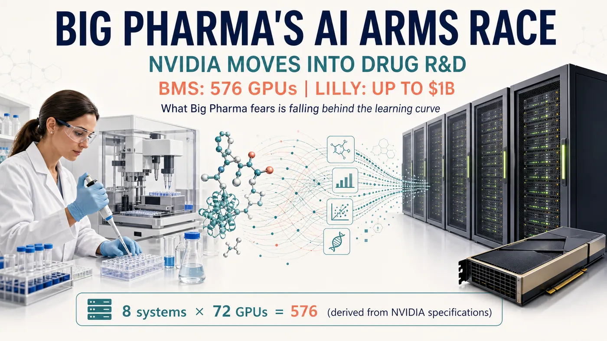

Founder / Editor-in-Chief
Dr. Jo-Fan Pan
PhD, University of Manchester; BSN, National Taiwan University. Leads Drugnews topic selection, business-analysis frameworks, long-form structure, and reader communication.
Official Site
Drugnews turns clinical data, company strategy, licensing activity, and capital-market signals into clear business judgment for biotech and pharmaceutical readers.
Taiwan-based biotech and pharmaceutical business intelligence for global readers.
BMS is preparing to deploy what NVIDIA's published specifications imply is a 576-GPU Rubin system, while Lilly and NVIDIA plan to commit up to $1 billion over five years. The real contest is whether proprietary data, wet-lab execution and clinical evidence can become one learning loop.

Editorial Standard
We cover company research, clinical and CMC risks, licensing and BD, valuation, and capital-market signals. The goal is not to summarize news, but to explain which evidence can change business value.
Reading Paths
Start from timely English analysis, then move into research frameworks, paid deeper work, or company-service collaborations when needed.
Reader-first biotech and pharmaceutical business analysis translated and edited for professional English readers.
Evidence-first frameworks for clinical endpoints, regulatory milestones, and licensing economics.
Deeper company tracking and industry context for readers who need repeatable biotech business judgment.
Investor-facing biotech content, market storytelling, and English communication support for company teams.
Team
Drugnews is built by Dr. Jo-Fan Pan and Dr. Chuan-Sheng Lin, combining clinical medicine, biotech R&D, business development, and capital-market perspectives. The editorial goal is to turn biotech information into research material readers can inspect, compare, and track.
PhD, University of Manchester; BSN, National Taiwan University. Leads Drugnews topic selection, business-analysis frameworks, long-form structure, and reader communication.
Biomedical dual-PhD background with more than 15 years across the biotech and pharmaceutical R&D value chain, helping review scientific evidence, technical barriers, and development risk.